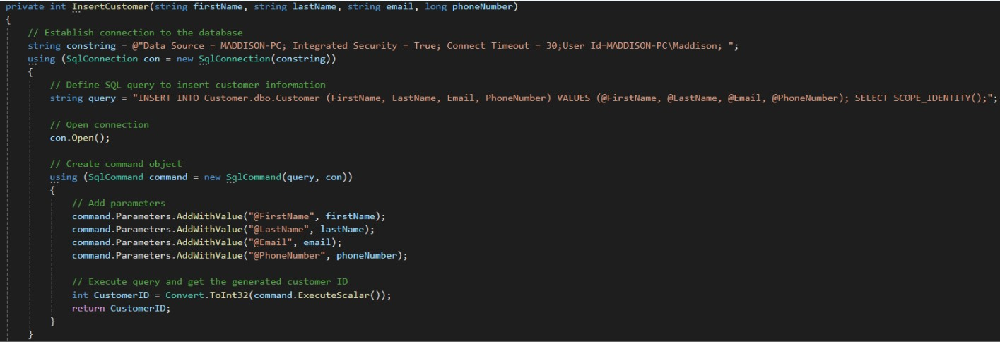
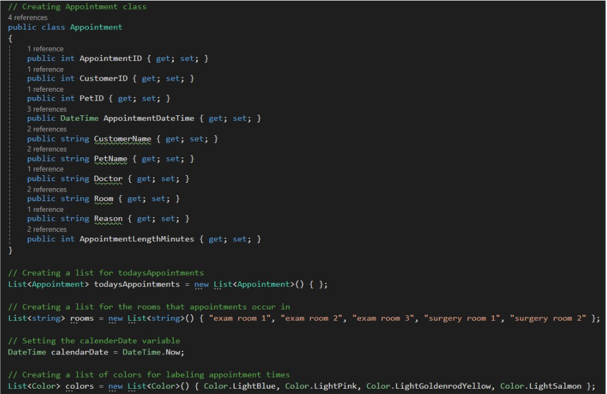

The Veterinary Appointment Tracker and Customer Database Application is created for veterinarian offices to help complete daily tasks in one application. It includes features such as a schedule for viewing daily appointments, an add client page to add new clients to the system, a schedule appoinment page to schedule new appointments, and search functionality to search for clinets in the system. The main purpose for this application is to allow users to complete daily tasks quickly and easily all in one application. It will cut down on frustration and increase customer and staff satisfaction.
This application was created to allow veterinarian offices to eliminate the use of manual files and transfer everything to be digital. Staff will no longer need to sort through hundreds of manual files as everything will be stored digitally for their viewing. This will allow tasks to be completed easier and eliminate mistakes that may be made when using manual files.
This application was created in Visual Studio using Windows Forms in the C# language. It contains four different forms that are each used to complete different tasks. The main form contains the schedule where users can view appointments for any date that they choose. The Add Client form allows users to add a new client and their pet to the system, so that their information can be saved and appointments can be scheduled for them. The Schedule Appointment form allows users to schedule new appointments for customers that are already added to the system. Lastly, the search functionality allows users to input the name of any client that is already in the system and their information will be displayed. All of the customer, pet, and appointment information is stored in a SQL database.
Many SQL queries were used in the code to be able to store and retrieve data in the database. For example, the following snippet of code was used to add the input from the user for the client information into the database:
The following code is how the appointments are added to the schedule at the correct room and time, and highlighted different colors:
View the User Training Manual Here:
User Training Manual
View the System Maintenance Manual Here:
System Maintenance Manual